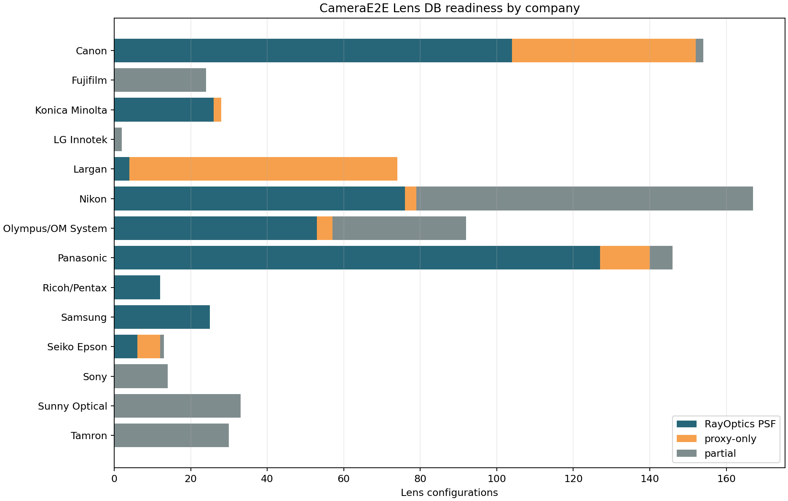
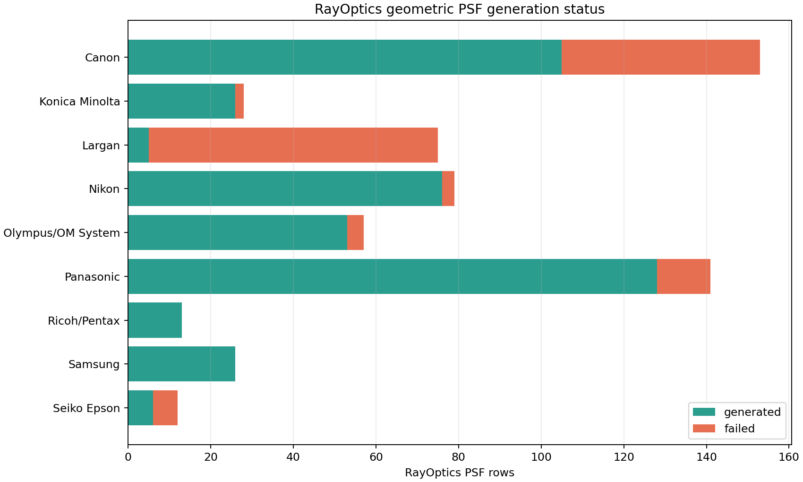
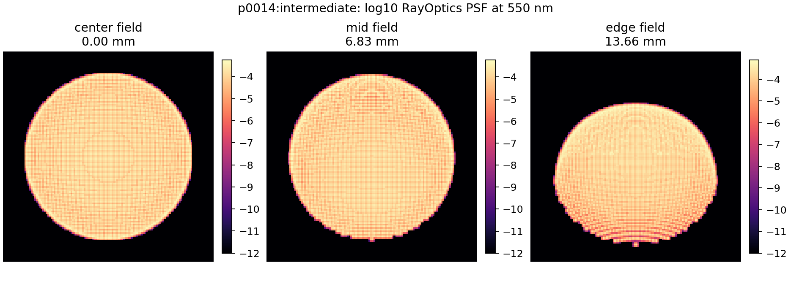
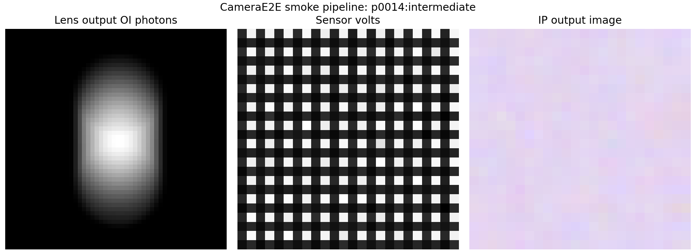

This report verifies that CameraE2E is using the active RayOptics Lens DB package and can run a lens-through-sensor-through-IP smoke pipeline with a generated RayOptics PSF asset.
| Item | Value |
|---|---|
| Lens data directory | /Users/seongcheoljeong/RayOptics/CameraE2E_Lens_DB_v9_20260627/data/lens_patents |
| SQLite DB | /Users/seongcheoljeong/RayOptics/CameraE2E_Lens_DB_v9_20260627/data/lens_patents/lens_patent_simulation_v9.sqlite |
| Total companies | 14 |
| Total lenses | 427 |
| Total simulation rows | 822 |
| CameraE2E-ready rows | 584 |
| Debug RayOptics PSFs | 438 generated / 584 total |
Highres production PSFs: 5 generated / 5 total


Sample simulation ID: p0014:intermediate


| Metric | Value |
|---|---|
| Smoke scene | bar |
| PSF directory | /Users/seongcheoljeong/RayOptics/CameraE2E_Lens_DB_v9_20260627/data/lens_patents/raytrace_psf_highres |
| PSF shape | [64, 64, 5, 3] |
| OI photons shape | [52, 52, 31] |
| Sensor volts shape | [24, 24] |
| IP image shape | [24, 24, 3] |
| Sensor volts min / mean / max | 0.435229 / 0.609001 / 0.968168 |
| IP image min / mean / max | 0.766926 / 0.862527 / 0.968168 |
Interpretation: this verifies Lens DB ingestion and CameraE2E execution. It does not prove wave-optics diffraction parity, because the RayOptics PSFs in this package are geometric ray-histogram PSFs.
Generated from tools/render_lens_db_camerae2e_report.py. JSON summary: lens_db_camerae2e_summary.json